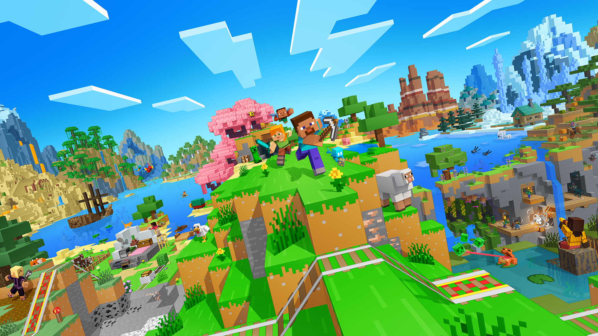
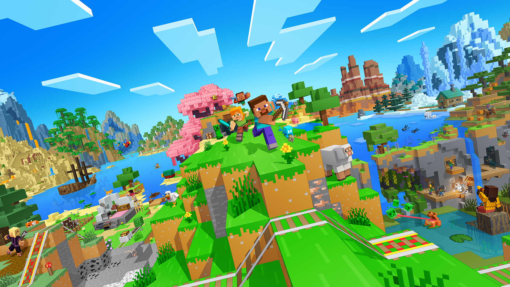

Allgemein:
Minecraft ist ein Videospiel, in dem Spieler eine offene Welt aus würfelförmigen Blöcken erkunden, abbauen und gestalten können. Man kann Rohstoffe sammeln, Werkzeuge bauen, Häuser oder ganze Städte errichten und gegen Monster kämpfen.
Spielmodi:
Es gibt verschiedene Spielmodi – vom Überleben mit begrenzten Ressourcen bis hin zum Kreativmodus, in dem man frei bauen kann.
Kreativität:
Das Spiel ist bekannt dafür, dass man seiner Fantasie fast unbegrenzt freien Lauf lassen kann.
 

Allgemein:
Die Minecraft: Java Edition ist die ursprüngliche Version von Minecraft für den Computer. Hier kannst du in der normalen Welt bauen, abbauen und Abenteuer erleben.
Server:
In der Java Edition gibt es viele große Server. Dort kannst du Minispiele spielen, mit Freunden zusammen bauen oder dich in Wettkämpfen messen.
Mods:
Ein großer Vorteil: Du kannst Mods installieren. Damit holst du dir neue Blöcke, Tiere, Maschinen oder sogar ganz neue Welten ins Spiel.
Grafik:
Mit Texture Packs und Shadern kannst du die Grafik verändern – von einfach bis superrealistisch.
Fazit:
Die Java Edition ist super für alle, die Minecraft frei gestalten und zusammen mit anderen noch mehr erleben wollen.
Eigene Meinung:
Die Java Edition ist perfekt, wenn du Mods nutzen möchtest und gerne auf großen Servern spielst. Auch die Grafik lässt sich hier viel besser anpassen. Allerdings brauchst du einen guten PC, um sie flüssig spielen zu können und du kannst nicht (nur sehr schwer) mit deinen Freunden auf der >Bedrock spielen. Ich präferiere diese Edition, da ich sehr gerne mit Mods spiele und Server ein absoluter muss sind
Allgemein:
Die Minecraft: Bedrock Edition läuft auf vielen Geräten: Handy, Tablet, Konsole und PC. Damit kannst du fast überall Minecraft spielen.
Server & Realms:
Du kannst mit Freunden über Realms oder große Server spielen – auch wenn sie auf einem anderen Gerät sind. So können PC-Spieler z. B. mit Xbox- oder Handy-Spielern zusammenspielen.
Mods/Add-ons:
Statt Mods gibt es in der Bedrock Edition sogenannte Add-ons oder Inhalte aus dem Marketplace. Dort findest du Skins, Welten und kleine Erweiterungen, die oft einfacher zu nutzen sind, aber Geld kosten.
Grafik:
Die Bedrock Edition ist für viele Geräte optimiert und läuft meist flüssiger als die Java Edition. Mit RTX (Raytracing) kannst du auf manchen PCs sogar besonders realistische Grafik erleben.
Fazit:
Die Bedrock Edition ist perfekt, wenn du überall spielen und dich leicht mit Freunden verbinden willst – egal, welches Gerät sie haben.
Eigene Meinung:
Die Bedrock Edition ist super praktisch, wenn du mit Freunden auf verschiedenen Geräten spielen möchtest. Außerdem ist sie super wenn du keinen eigenen Pc hast, abe trotzdem Minecraft spielen möchtest. Allerdings sind die Nachteile, dass du keine Mods installieren kannst (es sei denn du kaufst sie mit Geld, kannst sie danna ber immernoch nicht auf Servern benutzen), die Grafik ist nicht so gut wie bei der Java Edition (aber das kann man sich ändern) und die Steuerung auf Konsolen und Handys manchmal etwas umständlich ist.